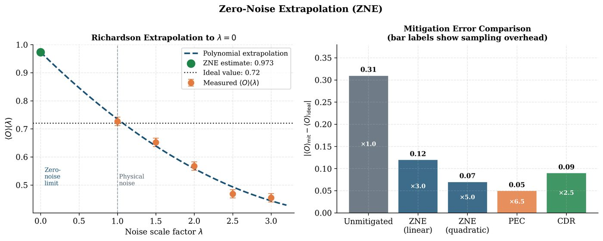

Chapter 18: Quantum Error Mitigation¶
Quantum error correction (QEC) requires fault-tolerant hardware beyond current reach. Quantum error mitigation (QEM) is a family of classical post-processing techniques that suppress noise effects on near-term devices without physical ancillas. This chapter covers zero-noise extrapolation (ZNE), probabilistic error cancellation (PEC), Clifford data regression (CDR), readout error mitigation, and symmetry verification.
Learning Objectives
By the end of this chapter, you will be able to:
-
Distinguish quantum error correction from quantum error mitigation
-
Apply zero-noise extrapolation to recover noiseless expectation values
-
Implement probabilistic error cancellation using quasi-probability decompositions
-
Use Clifford data regression to train noise-aware surrogate models
-
Apply readout error mitigation and symmetry verification in Qiskit/Mitiq
18.1 Error Mitigation vs. Error Correction¶
| Property | Error Correction (QEC) | Error Mitigation (QEM) |
|---|---|---|
| Overhead | \(O(d^2)\) physical qubits per logical | Classical post-processing |
| Requires | Fault-tolerant hardware | NISQ devices |
| Noise reduction | Exponential (code distance \(d\)) | \(O(1/\sqrt{M})\) in shots |
| Scalable | Yes (in principle) | No (exponential sampling) |
| Applications | Fault-tolerant QC | Near-term VQAs |
| Cost | Hardware (qubits) | Classical (samples) |
Definition: Quantum Error Mitigation
Quantum error mitigation techniques produce an estimate \(\tilde{E} = \langle\hat{O}\rangle_\text{ideal}\) of the noise-free expectation value from noisy circuit executions, at the cost of increased measurement overhead (more shots or more circuits).
18.2 Zero-Noise Extrapolation¶
Definition: Zero-Noise Extrapolation (ZNE; Temme et al., 2017)
ZNE (Temme et al. 2017) runs circuits at multiple noise levels \(\{\lambda_1, \lambda_2, …, \lambda_k\}\) (\(\lambda_i > 1\) means amplified noise) and extrapolates to the zero-noise limit \(\lambda\to0\).
Noise amplification methods:
-
Gate folding: Replace each gate \(G\) with \(GG^\dagger G\) (3\(\times\) noise amplification). For factor \(\lambda\): apply \(G(G^\dagger G)^{(\lambda-1)/2}\).
-
Pulse stretching: Slow down microwave pulses on superconducting hardware (requires pulse-level access).
-
Identity insertion: Insert pairs of canceling gates \(G G^\dagger\) at noise-sensitive locations.
Extrapolation models:
At \(\lambda=0\): \(\tilde{E} = E(0) = a\) is the mitigated estimate.
Solved Example 18.1
Problem: A noisy circuit gives \(E(1) = 0.7\), \(E(2) = 0.5\), \(E(3) = 0.35\) (at noise factors 1, 2, 3). Use linear and quadratic extrapolation to estimate \(E(0)\).
Solution:
Linear (using only \(\lambda=1,2\)): \(E(\lambda) = a + b\lambda\). \(0.7 = a + b\), \(0.5 = a + 2b \Rightarrow b = -0.2\), \(a = 0.9\). \(\tilde{E}_\text{lin} = E(0) = 0.9\).
Quadratic (using \(\lambda=1,2,3\)): \(\begin{pmatrix}1&1&1\\1&2&4\\1&3&9\end{pmatrix}\begin{pmatrix}a\\b\\c\end{pmatrix} = \begin{pmatrix}0.7\\0.5\\0.35\end{pmatrix}\)
Solving: \(a = 0.95\), \(b = -0.275\), \(c = 0.025\). \(\tilde{E}_\text{quad} = E(0) = 0.95\).
The quadratic model uses all data points and typically gives a better estimate when noise has a quadratic component.
18.2.1 Richardson Extrapolation¶
For polynomial noise models \(E(\lambda) = \sum_{k=0}^m a_k\lambda^k\), Richardson extrapolation at \(m+1\) noise levels gives exact recovery if the polynomial order is \(\leq m\):
18.3 Probabilistic Error Cancellation¶

Definition: Probabilistic Error Cancellation (PEC; Temme et al., 2017)
PEC (Temme et al. 2017) expresses the ideal circuit as a linear combination of implementable (noisy) circuits using quasi-probability decompositions:
where \(\{\mathcal{E}_i\}\) are physically implementable (noisy) operations and \(\{c_i\}\) are real coefficients (can be negative — quasi-probabilities).
PEC estimator:
where \(\gamma = \sum_i|c_i|\) is the sampling overhead (one-norm of the quasi-probability).
Sampling overhead: To achieve estimator variance \(\leq\epsilon^2\), one needs \(M = O(\gamma^2/\epsilon^2)\) samples. For a circuit of \(L\) noisy gates each with quasi-probability \(\gamma_i\):
This grows exponentially in circuit depth — PEC is exact but costly.
Note
For a single depolarizing gate with error rate \(p\), the quasi-probability one-norm is \(\gamma = 1 + 2p\), giving \(\gamma^2 - 1 \approx 4p\) overhead in sampling. For 100 gates at 1% error: \(\gamma_\text{total} = 1.02^{100} \approx 7.2\), requiring \(\approx 52\times\) more samples than noiseless.
18.4 Clifford Data Regression¶
Definition: Clifford Data Regression (CDR; Czarnik et al., 2021)
CDR (Czarnik et al. 2021) trains a classical regression model to predict the noise-free expectation value from noisy observations, using Clifford circuits (efficiently simulable classically) as training data.
CDR procedure:
-
Generate near-Clifford circuits \(\{C_i\}\) by replacing most non-Clifford gates in the target circuit with nearest Clifford approximations.
-
Simulate \(\{C_i\}\) classically to get \(\{E_i^\text{ideal}\}\) (exact).
-
Execute \(\{C_i\}\) on hardware to get \(\{E_i^\text{noisy}\}\).
-
Train regression model: \(E^\text{ideal} = a\cdot E^\text{noisy} + b\).
-
Apply learned correction to target circuit’s noisy output: \(\tilde{E} = a\cdot E^\text{noisy}_\text{target} + b\).
CDR is effective when the noise model is similar across near-Clifford and target circuits.
18.5 Readout Error Mitigation¶
Readout errors (\(|0\rangle\to|1\rangle\) with probability \(p_{0\to1}\), \(|1\rangle\to|0\rangle\) with probability \(p_{1\to0}\)) are modeled by a calibration matrix \(A\):
Measurement error mitigation: Invert \(A\) to recover \(\mathbf{p}_\text{ideal} = A^{-1}\mathbf{p}_\text{noisy}\).
Calibration: prepare all \(2^n\) computational basis states, measure the noisy probabilities to build \(A\). For large \(n\), use tensor-product approximation \(A \approx \bigotimes_i A_i\) (independent readout errors).
18.6 Symmetry Verification¶
For circuits that respect a symmetry \(S\) (e.g. particle number in chemistry), noisy outputs can be post-selected or reweighted using symmetry violations as an error indicator.
States with wrong symmetry eigenvalue are discarded (post-selection) or down-weighted (probabilistic).
18.7 Implementation with Mitiq¶
import mitiq
from mitiq import zne, pec, cdr
from mitiq.interface.qiskit import from_qiskit, to_qiskit
from qiskit import QuantumCircuit
from qiskit_aer import AerSimulator
from qiskit_aer.noise import NoiseModel, depolarizing_error
import numpy as np
# -- Setup: noisy backend -------------------------------------
noise_model = NoiseModel()
noise_model.add_all_qubit_quantum_error(
depolarizing_error(0.02, 1), ['u', 'rx', 'ry', 'rz']
)
noise_model.add_all_qubit_quantum_error(
depolarizing_error(0.05, 2), ['cx']
)
sim = AerSimulator(noise_model=noise_model)
# -- Target circuit: GHZ state ---------------------------------
def make_ghz(n=4):
qc = QuantumCircuit(n)
qc.h(0)
for i in range(n-1):
qc.cx(i, i+1)
return qc
qc = make_ghz(4)
# -- Executor function for Mitiq -------------------------------
def noisy_executor(circuit):
"""Run a Mitiq circuit on the noisy simulator, return <Z0>."""
from qiskit import transpile
qiskit_circuit = to_qiskit(circuit)
qiskit_circuit.measure_all()
transpiled = transpile(qiskit_circuit, sim)
job = sim.run(transpiled, shots=8192)
counts = job.result().get_counts()
# Estimate <Z0>: +1 if bit 0 is 0, -1 if bit 0 is 1
total = sum(counts.values())
z0 = sum((-1)**int(bits[-1]) * count
for bits, count in counts.items()) / total
return z0
# Convert to Mitiq circuit
mitiq_circuit = from_qiskit(qc)
# -- Ideal result (noiseless) ---------------------------------
sim_ideal = AerSimulator()
def ideal_executor(circuit):
from qiskit import transpile
qc2 = to_qiskit(circuit)
qc2.measure_all()
job = sim_ideal.run(transpile(qc2, sim_ideal), shots=8192)
counts = job.result().get_counts()
total = sum(counts.values())
return sum((-1)**int(b[-1]) * c for b, c in counts.items()) / total
ideal_value = ideal_executor(mitiq_circuit)
noisy_value = noisy_executor(mitiq_circuit)
print(f"Ideal <Z0>: {ideal_value:.4f}")
print(f"Noisy <Z0>: {noisy_value:.4f}")
print(f"Error: {abs(ideal_value - noisy_value):.4f}")
# -- Zero-Noise Extrapolation ---------------------------------
# Scale noise by 1x, 2x, 3x using gate folding
zne_result = zne.execute_with_zne(
mitiq_circuit,
executor=noisy_executor,
factory=zne.RichardsonFactory(scale_factors=[1, 2, 3])
)
print(f"\nZNE-mitigated <Z0>: {zne_result:.4f}")
print(f"ZNE error: {abs(ideal_value - zne_result):.4f}")
# -- Exponential extrapolation --------------------------------
zne_exp = zne.execute_with_zne(
mitiq_circuit,
executor=noisy_executor,
factory=zne.ExpFactory(scale_factors=[1, 2, 3], asymptote=0.0)
)
print(f"ZNE (exp) <Z0>: {zne_exp:.4f}")
# -- Readout error mitigation ---------------------------------
from qiskit.utils.mitigation import complete_meas_cal, CompleteMeasFitter
from qiskit import transpile
n_qubits = 4
meas_calibs, state_labels = complete_meas_cal(
qubit_list=range(n_qubits),
qr=None, cr=None, circlabel='cal'
)
cal_jobs = sim.run(transpile(meas_calibs, sim), shots=8192)
cal_results = cal_jobs.result()
meas_fitter = CompleteMeasFitter(cal_results, state_labels)
print(f"\nReadout error mitigation matrix condition number: "
f"{np.linalg.cond(meas_fitter.cal_matrix):.2f}")
18.8 Chapter Summary¶
Chapter Summary
-
ZNE: Run circuits at amplified noise levels, extrapolate to zero noise. Methods: gate folding, Richardson extrapolation, exponential fit. Cost: \(O(m)\) circuits for \(m\) noise levels.
-
PEC: Quasi-probability decomposition of ideal as linear combo of noisy operations. Exact but exponential sampling overhead \(\gamma^{2L}\).
-
CDR: Train regression on near-Clifford circuits (classically simulable). Effective for smooth noise models.
-
Readout mitigation: Calibration matrix \(A\); invert to correct measurement errors. Tensor-product approximation for large \(n\).
-
Symmetry verification: Post-select on correct symmetry sector. Free mitigation when problem has known symmetries.
Exercises
Exercise . Explain why ZNE works for polynomial (but not exponential) noise models at low noise levels. What is the systematic error of ZNE when the true noise model is exponential but linear extrapolation is used?
Exercise . A 10-gate circuit has depolarizing error rate \(p=0.02\) per gate. Calculate the PEC sampling overhead \(\gamma^2\) for the full circuit. How many times more shots does PEC require vs. raw noisy execution?
Exercise . Implement ZNE from scratch (no Mitiq) for a 4-qubit QAOA circuit: amplify noise by factors 1, 2, 3 using gate folding, fit a quadratic polynomial, and extract the \(\lambda=0\) value. Compare with Mitiq’s built-in ZNE.
Further Reading
-
Temme et al. (2017) (Temme et al. 2017) — ZNE and PEC original paper
-
Czarnik et al. (2021) (Czarnik et al. 2021) — Clifford data regression
-
Cai et al. (2023) — comprehensive quantum error mitigation review
-
LaRose et al. (2022) — Mitiq: an open-source package for error mitigation